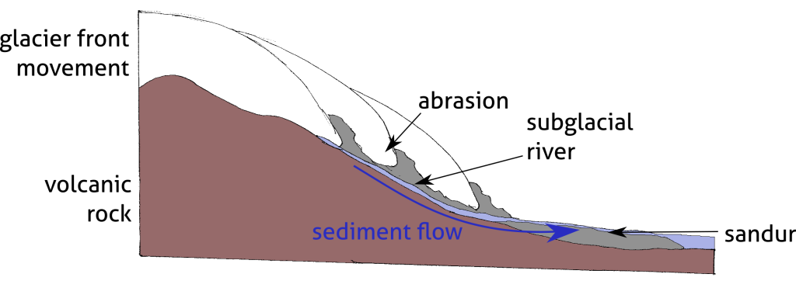
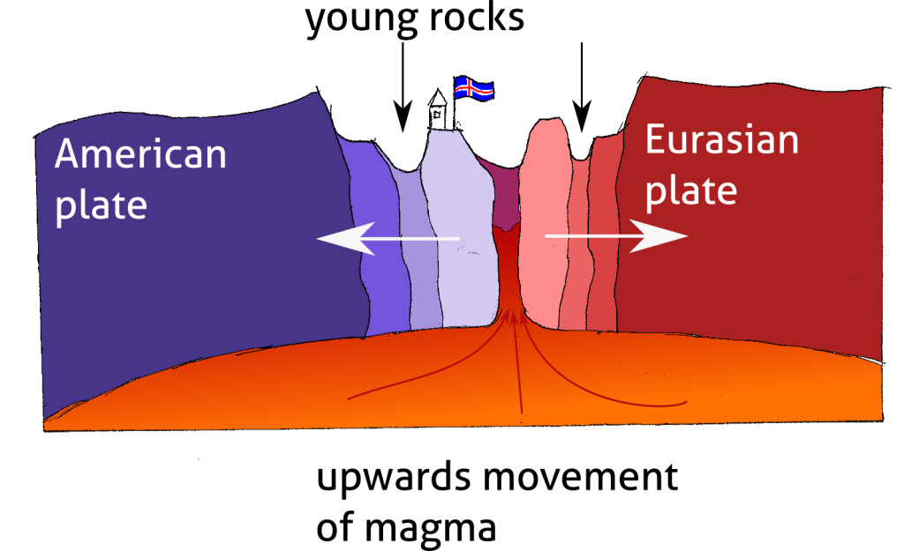

<?xml version="1.0" encoding="UTF-8"?><rss version="2.0"
	xmlns:content="http://purl.org/rss/1.0/modules/content/"
	xmlns:wfw="http://wellformedweb.org/CommentAPI/"
	xmlns:dc="http://purl.org/dc/elements/1.1/"
	xmlns:atom="http://www.w3.org/2005/Atom"
	xmlns:sy="http://purl.org/rss/1.0/modules/syndication/"
	xmlns:slash="http://purl.org/rss/1.0/modules/slash/"
	>

<channel>
	<title>All &#8211; Julian Podgórski</title>
	<atom:link href="" rel="self" type="application/rss+xml" />
	<link>../../../../mojastrona/index.html</link>
	<description>I am a trained geoscientist and GIS specialist, currently looking for a remote job opportunity.</description>
	<lastBuildDate>Wed, 24 Apr 2024 18:16:53 +0000</lastBuildDate>
	<language>en-US</language>
	<sy:updatePeriod>
	hourly	</sy:updatePeriod>
	<sy:updateFrequency>
	1	</sy:updateFrequency>
	<generator>https://wordpress.org/?v=6.5.2</generator>
	<item>
		<title>Retrofuturistic-style map of Reykjavik</title>
		<link>../../../retrofuturistic-style-map-of-reykjavik/index.html</link>
		
		<dc:creator><![CDATA[jpodgo]]></dc:creator>
		<pubDate>Wed, 24 Apr 2024 17:58:38 +0000</pubDate>
				<category><![CDATA[All]]></category>
		<category><![CDATA[Cartography]]></category>
		<guid isPermaLink="false">../../../index.html?p=174</guid>

					<description><![CDATA[The map below is a highly stylized visualization of OpenStreetMap data covering Reykiavik, the capital of Iceland. I have achieved the cyberpunk-style effect with use of rendering rules for OSM data and further processing in image manipulation programs.<div class="read-more-wrapper"><a class="read-more" href="../../../retrofuturistic-style-map-of-reykjavik/index.html" title="Read More"> <span class="button ">Read More</span></a></div>]]></description>
										<content:encoded><![CDATA[
<p class="has-medium-font-size">The map below is a highly stylized visualization of OpenStreetMap data covering Reykiavik, the capital of Iceland. I have achieved the cyberpunk-style effect with use of rendering rules for OSM data and further processing in image manipulation programs.</p>


<div class="wp-block-image">
<figure class="aligncenter size-large"></figure></div>]]></content:encoded>
					
		
		
			</item>
		<item>
		<title>State of the Arctic 2016 map</title>
		<link>../../../state-of-the-arctic-2016-map/index.html</link>
		
		<dc:creator><![CDATA[jpodgo]]></dc:creator>
		<pubDate>Wed, 24 Apr 2024 17:58:10 +0000</pubDate>
				<category><![CDATA[All]]></category>
		<category><![CDATA[Cartography]]></category>
		<guid isPermaLink="false">../../../index.html?p=176</guid>

					<description><![CDATA[This &#8220;State of the Arctic&#8221; map from 2016 is a product of my fascination with the Arctic region. As I learned more and more about the area I wanted to be able to confront the different information, look for connections between seemingly unrelated variables. I have pulled data from various scientific and OSINT sources and<div class="read-more-wrapper"><a class="read-more" href="../../../state-of-the-arctic-2016-map/index.html" title="Read More"> <span class="button ">Read More</span></a></div>]]></description>
										<content:encoded><![CDATA[
<p class="has-medium-font-size">This &#8220;State of the Arctic&#8221; map from 2016 is a product of my fascination with the Arctic region. As I learned more and more about the area I wanted to be able to confront the different information, look for connections between seemingly unrelated variables. I have pulled data from various scientific and OSINT sources and visualized them with QGIS and graphic design programs. While the map was a personal project born of my curiosity, I have presented it to great interest on the 7th International Geosciences Student Conference in Katowice in July 2016.</p>


<div class="wp-block-image">
<figure class="aligncenter size-large"></figure></div>]]></content:encoded>
					
		
		
			</item>
		<item>
		<title>Science communication</title>
		<link>../../../science-communication/index.html</link>
		
		<dc:creator><![CDATA[jpodgo]]></dc:creator>
		<pubDate>Mon, 22 Apr 2024 09:39:39 +0000</pubDate>
				<category><![CDATA[All]]></category>
		<category><![CDATA[Graphic design]]></category>
		<guid isPermaLink="false">../../../index.html?p=124</guid>

					<description><![CDATA[During my time at the Institute of Geophysics I have been engaged in a variety of science communication projects. Among my responsibilities was the design and delivery of webinars directed at school children and the general public. The webinars covered topics of geophysics, technical aspects of remote sensing and cultural matters of the Arctic. Some<div class="read-more-wrapper"><a class="read-more" href="../../../science-communication/index.html" title="Read More"> <span class="button ">Read More</span></a></div>]]></description>
										<content:encoded><![CDATA[
<p class="has-medium-font-size">During my time at the Institute of Geophysics I have been engaged in a variety of science communication projects. Among my responsibilities was the design and delivery of webinars directed at school children and the general public. The webinars covered topics of geophysics, technical aspects of remote sensing and cultural matters of the Arctic. Some of them required custom graphical elements such as diagrams and maps, which I have been drawing for the purpose. These works are collected here. I was using Inkscape to create the digital forms of the works, but some of them are based on my pencil-on-paper drawings.</p>


<div class="wp-block-columns is-layout-flex wp-container-core-columns-is-layout-1 wp-block-columns-is-layout-flex">
<div class="wp-block-column is-layout-flow wp-block-column-is-layout-flow">
<figure class="wp-block-image size-full"><figcaption class="wp-element-caption">Schematic drawing showing basic workings and mathematics of airborne LiDAR scanning</figcaption></figure>
</div>


<div class="wp-block-column is-layout-flow wp-block-column-is-layout-flow">
<figure class="wp-block-image size-full"><figcaption class="wp-element-caption">Schematic drawing showing the principle of signal reflection in airborne laser scanning</figcaption></figure>
</div>
</div>


<div class="wp-block-columns is-layout-flex wp-container-core-columns-is-layout-2 wp-block-columns-is-layout-flex">
<div class="wp-block-column is-layout-flow wp-block-column-is-layout-flow">
<figure class="wp-block-image size-large"><figcaption class="wp-element-caption">Schematic drawing showing the glacial erosion leading to the development of a fjord.</figcaption></figure>
</div>


<div class="wp-block-column is-layout-flow wp-block-column-is-layout-flow">
<figure class="wp-block-image size-large"><figcaption class="wp-element-caption">Schematic drawing showing the hydrological and sedimentological process which leads to formation of sandur at the front of a glacier</figcaption></figure>
</div>
</div>


<div class="wp-block-columns is-layout-flex wp-container-core-columns-is-layout-3 wp-block-columns-is-layout-flex">
<div class="wp-block-column is-layout-flow wp-block-column-is-layout-flow">
<figure class="wp-block-image size-large"><figcaption class="wp-element-caption">Schematic drawing of the seaflooe spreading in the rift zone with Iceland as the example</figcaption></figure>
</div>


<div class="wp-block-column is-layout-flow wp-block-column-is-layout-flow">
<figure class="wp-block-image size-large"><figcaption class="wp-element-caption">Schematic drawing which outlines the transfer of heat through the crust which makes hydrothermal power and geysers possible.</figcaption></figure>
</div>
</div>
]]></content:encoded>
					
		
		
			</item>
		<item>
		<title>Detection of glacier outlines on LANDSAT images</title>
		<link>../../../detection-of-glacier-outlines-on-landsat-images/index.html</link>
		
		<dc:creator><![CDATA[jpodgo]]></dc:creator>
		<pubDate>Thu, 11 Apr 2024 11:07:44 +0000</pubDate>
				<category><![CDATA[All]]></category>
		<category><![CDATA[Graphic design]]></category>
		<guid isPermaLink="false">../../../index.html?p=30</guid>

					<description><![CDATA[A poster summarizing the methods and findings of the Master of Science thesis I have defended in the Department of Geography and Regional Studies of the University of Warsaw. The poster contains graphs created for the purpose of the thesis and text in Polish. I have attempted to present the study as a logical succession<div class="read-more-wrapper"><a class="read-more" href="../../../detection-of-glacier-outlines-on-landsat-images/index.html" title="Read More"> <span class="button ">Read More</span></a></div>]]></description>
										<content:encoded><![CDATA[
<p class="has-medium-font-size">A poster summarizing the methods and findings of the Master of Science thesis I have defended in the Department of Geography and Regional Studies of the University of Warsaw. The poster contains graphs created for the purpose of the thesis and text in Polish. I have attempted to present the study as a logical succession of goals, methods and results with a central arch driving the viewer&#8217;s eyes through the boxes in the intended order.</p>


<p class="has-medium-font-size">The Master&#8217;s thesis I have been working on in 2015-2017 was devoted to detection of glacier on LANDSAT imagery. I have taken an approach of iterative testing of image processing parameters and included steps &#8211; such as whether the LANDSAT image should be resampled into a finer resolution or if edge-detection filter was needed. The result has been tested against LiDAR-based maps sourced from the Institute of Geophysics of Polish Academy of Sciences. The test subjects were Arie and Hans glaciers located on Spitsbergen.</p>


<figure class="wp-block-image size-full"></figure>
]]></content:encoded>
					
		
		
			</item>
		<item>
		<title>Evaluation of TanDEM-X DEM for glaciological studies</title>
		<link>../../../evaluation-of-tandem-x-dem-for-glaciological-studies/index.html</link>
		
		<dc:creator><![CDATA[jpodgo]]></dc:creator>
		<pubDate>Thu, 11 Apr 2024 11:07:22 +0000</pubDate>
				<category><![CDATA[All]]></category>
		<category><![CDATA[Graphic design]]></category>
		<guid isPermaLink="false">../../../index.html?p=35</guid>

					<description><![CDATA[The poster is a summary of a scientific article &#8220;Performance Assessment of TanDEM-X DEM forMountain Glacier Elevation Change Detection&#8221; (the article on the journal&#8217;s website). The poster was created for display during the Living Planet Symposium conference held in Milan, Italy, in 2019. It is a very traditional design, intended to catch attention with striking<div class="read-more-wrapper"><a class="read-more" href="../../../evaluation-of-tandem-x-dem-for-glaciological-studies/index.html" title="Read More"> <span class="button ">Read More</span></a></div>]]></description>
										<content:encoded><![CDATA[
<p class="has-medium-font-size">The poster is a summary of a scientific article &#8220;Performance Assessment of TanDEM-X DEM for<br>Mountain Glacier Elevation Change Detection&#8221; (<a href="https://www.mdpi.com/2072-4292/11/2/187">the article on the journal&#8217;s website</a>). The poster was created for display during the Living Planet Symposium conference held in Milan, Italy, in 2019. It is a very traditional design, intended to catch attention with striking colors and images and explain the results of the study in a comprehensive manner.</p>


<div class="wp-block-image">
<figure class="aligncenter size-large"></figure></div>]]></content:encoded>
					
		
		
			</item>
		<item>
		<title>Overview maps of Chilean glaciers</title>
		<link>../../../universidad-glacier-overview-map/index.html</link>
		
		<dc:creator><![CDATA[jpodgo]]></dc:creator>
		<pubDate>Thu, 11 Apr 2024 11:03:56 +0000</pubDate>
				<category><![CDATA[All]]></category>
		<category><![CDATA[Cartography]]></category>
		<guid isPermaLink="false">../../../index.html?p=37</guid>

					<description><![CDATA[The two maps shown have been created for my doctoral dissertation. They show locations of the two glaciers discussed in the thesis: Universidad and San Quintin in Chile. One map shows the location of Universidad glacier within Central Chile (Dry Andes) and location of Dry Andes within Chile, alongside a plot of positive degree days<div class="read-more-wrapper"><a class="read-more" href="../../../universidad-glacier-overview-map/index.html" title="Read More"> <span class="button ">Read More</span></a></div>]]></description>
										<content:encoded><![CDATA[
<p><a href="../../../wp-admin/edit.php?post_type=post"></a></p>


<p class="has-medium-font-size">The two maps shown have been created for my doctoral dissertation. They show locations of the two glaciers discussed in the thesis: Universidad and San Quintin in Chile. One map shows the location of Universidad glacier within Central Chile (Dry Andes) and location of Dry Andes within Chile, alongside a plot of positive degree days and annual precipitation sum in the 21st century. The second map depicts the location of San Quintin glacier within Southern Chile (the North Patagonian Icefield) and location of the North Patagonian Icefield within Chile. </p>


<p>   </p>


<div class="wp-block-image">
<figure class="aligncenter size-large"><figcaption class="wp-element-caption">Overview map of Universidad glacier. Four panels show progressively smaller areas: South America, Chile, Dry Andes and the glacier itself. The latter is shown as a satellite image with overlaid outlines of extents of data relevant for my doctoral thesis.</figcaption></figure></div>

<div class="wp-block-image">
<figure class="aligncenter size-large"><figcaption class="wp-element-caption">Overview map of San Quintin glacier. Four panels show progressively smaller areas: South America, Chile, North Patagonian Icefield and the glacier itself. The latter is shown as a satellite image.</figcaption></figure></div>]]></content:encoded>
					
		
		
			</item>
		<item>
		<title>Evolution of a glacier&#8217;s surface during an extreme drought</title>
		<link>../../../art-universidad-debris/index.html</link>
		
		<dc:creator><![CDATA[jpodgo]]></dc:creator>
		<pubDate>Thu, 11 Apr 2024 11:03:34 +0000</pubDate>
				<category><![CDATA[All]]></category>
		<category><![CDATA[Research]]></category>
		<guid isPermaLink="false">../../../index.html?p=49</guid>

					<description><![CDATA[The last article I have published during my time at the Institute of Geophysics of Polish Academy of Sciences covers a study of surface debris cover of Universidad glacier in Chilean Andes. The work showcases a multifaceted methodology, combining several remote sensing products to create a conceptual model of the processes occurring on the glacier&#8217;s<div class="read-more-wrapper"><a class="read-more" href="../../../art-universidad-debris/index.html" title="Read More"> <span class="button ">Read More</span></a></div>]]></description>
										<content:encoded><![CDATA[
<p>The last article I have published during my time at the Institute of Geophysics of Polish Academy of Sciences covers a study of surface debris cover of Universidad glacier in Chilean Andes. The work showcases a multifaceted methodology, combining several remote sensing products to create a conceptual model of the processes occurring on the glacier&#8217;s surface.</p>


<p>We have used an aerial hyperspectral image as ground truth to establish a model to convert LANDSAT reflectance values to abundance of rock and ice within each pixel of an image. Classification of high resolution imagery with machine learning algorithms, which yielded detailed map of types of surface across the glacier. The variables describing the glacier&#8217;s surface have been compared to precipitation and positive degree days sums drawn from ERA5-Land reanalysis. In addition we used digital elevation models to study changes in surface drainage patterns on the glacial tongue.</p>


<p>The article shows gradual evolution of the Universidad glacier&#8217;s surface. It appears that the debris cover on the glacier expands, particularly on the tongue and glacier&#8217;s minor cirques. The latter are also shrinking and have detached from the glacier&#8217;s main body by 2020.</p>


<p>The project which yielded the publication has been partially financed with a National Science Center of Poland grant from the PRELUDIUM programme. </p>


<p></p>


<div data-wp-interactive="core/file" class="wp-block-file"><object data-wp-bind--hidden="!state.hasPdfPreview"  class="wp-block-file__embed" data="../../../wp-content/uploads/Podgorski-et-al-2023.pdf" type="application/pdf" style="width:100%;height:600px" aria-label="Embed of Podgorski et al 2023."></object><a id="wp-block-file--media-976a388a-b904-49e9-a184-582131db2445" href="../../../wp-content/uploads/Podgorski-et-al-2023.pdf">Podgorski et al 2023</a><a href="../../../wp-content/uploads/Podgorski-et-al-2023.pdf" class="wp-block-file__button wp-element-button" download aria-describedby="wp-block-file--media-976a388a-b904-49e9-a184-582131db2445">Download</a></div>
]]></content:encoded>
					
		
		
			</item>
		<item>
		<title>Remote sensing of lacustrine icebergs</title>
		<link>../../../art-san-quintin/index.html</link>
		
		<dc:creator><![CDATA[jpodgo]]></dc:creator>
		<pubDate>Thu, 11 Apr 2024 11:03:27 +0000</pubDate>
				<category><![CDATA[All]]></category>
		<category><![CDATA[Research]]></category>
		<guid isPermaLink="false">../../../index.html?p=47</guid>

					<description><![CDATA[In this article I present the methods and results of the work I have been doing with Michał Pętlicki, PhD, in the field of iceberg remote sensing. The article contains a detailed description of a procedure for detection of icebergs on high-resolution satellite imagery and a discussion of the statistical properties of the population of<div class="read-more-wrapper"><a class="read-more" href="../../../art-san-quintin/index.html" title="Read More"> <span class="button ">Read More</span></a></div>]]></description>
										<content:encoded><![CDATA[
<p class="has-medium-font-size">In this article I present the methods and results of the work I have been doing with Michał Pętlicki, PhD, in the field of iceberg remote sensing. The article contains a detailed description of a procedure for detection of icebergs on high-resolution satellite imagery and a discussion of the statistical properties of the population of icebergs in the proglacial lake of the San Quintin glacier in southern Chile. </p>


<p class="has-medium-font-size">We used high-resolution satellite images and a digital elevation model derived from them to create a map of icebergs. The challenge of the task lied in the similarity of the sediment-laden lake water and the surfaces of the icebergs covered in the same sediments. The seemingly complex procedure involving object-based image analysis, machine learning classification and computer vision algorithms led to successful detections. Mathematical analysis showed that the distribution of iceberg sizes in the lacustrine environment is similar to that of marine icebergs.</p>


<p class="has-medium-font-size">This fruit of Polish-Chilean cooperation has been released in mid-2020 and has been cited 8 times since.  <a href="https://www.mdpi.com/2072-4292/12/11/1807">Link to the article on the journal website.</a></p>


<div data-wp-interactive="core/file" class="wp-block-file aligncenter"><object data-wp-bind--hidden="!state.hasPdfPreview"  class="wp-block-file__embed" data="../../../wp-content/uploads/Podgorski-and-Petlicki-2020.pdf" type="application/pdf" style="width:100%;height:600px" aria-label="Embed of Podgorski and Petlicki 2020."></object><a id="wp-block-file--media-176c060b-4cb7-4f7b-98e6-54d395ea550d" href="../../../wp-content/uploads/Podgorski-and-Petlicki-2020.pdf">Podgorski and Petlicki 2020</a><a href="../../../wp-content/uploads/Podgorski-and-Petlicki-2020.pdf" class="wp-block-file__button wp-element-button" download aria-describedby="wp-block-file--media-176c060b-4cb7-4f7b-98e6-54d395ea550d">Download</a></div>
]]></content:encoded>
					
		
		
			</item>
		<item>
		<title>DEM analysis for glaciology</title>
		<link>../../../art-tandem-universidad/index.html</link>
		
		<dc:creator><![CDATA[jpodgo]]></dc:creator>
		<pubDate>Thu, 11 Apr 2024 11:03:17 +0000</pubDate>
				<category><![CDATA[All]]></category>
		<category><![CDATA[Research]]></category>
		<guid isPermaLink="false">../../../index.html?p=45</guid>

					<description><![CDATA[My second article published in a peer-reviewed journal is primarily a fairly technical text, dealing with quality assessment of an elevation model TanDEM-X DEM shortly after its release by the German Space Agency in 2016. We have tackled the question whether the new product is suitable for glaciological studies, particularly elevation change detection. The model<div class="read-more-wrapper"><a class="read-more" href="../../../art-tandem-universidad/index.html" title="Read More"> <span class="button ">Read More</span></a></div>]]></description>
										<content:encoded><![CDATA[
<p class="has-medium-font-size">My second article published in a peer-reviewed journal is primarily a fairly technical text, dealing with quality assessment of an elevation model TanDEM-X DEM shortly after its release by the German Space Agency in 2016. We have tackled the question whether the new product is suitable for glaciological studies, particularly elevation change detection. The model was compared to previously existing products (ASTER DEM and SRTM DEM) and an airborne LiDAR-scanning derived model.</p>


<p class="has-medium-font-size">The work summarized in the article demonstrated that TanDEM-X DEM is sufficiently accurate for glaciological change detection. To prove this, medium-term geodetic mass balance of a Chilean mountain glaicier has been computed. We have shown that Universidad glacier in central Chile has been melting in the first decade of the 21st century on almost its entire surface. In particular, the surface lowering (melting) was especially strong on its tongue, leading to development of local topography.</p>


<p class="has-medium-font-size"><a href="https://www.mdpi.com/2072-4292/11/2/187">Link to the article on the journal website.</a></p>


<div data-wp-interactive="core/file" class="wp-block-file"><object data-wp-bind--hidden="!state.hasPdfPreview"  class="wp-block-file__embed" data="../../../wp-content/uploads/Podgorski-et-al-2019.pdf" type="application/pdf" style="width:100%;height:600px" aria-label="Embed of Podgorski et al 2019."></object><a id="wp-block-file--media-326205a5-ed59-42ff-bea9-cbc474f5b112" href="../../../wp-content/uploads/Podgorski-et-al-2019.pdf">Podgorski et al 2019</a><a href="../../../wp-content/uploads/Podgorski-et-al-2019.pdf" class="wp-block-file__button wp-element-button" download aria-describedby="wp-block-file--media-326205a5-ed59-42ff-bea9-cbc474f5b112">Download</a></div>
]]></content:encoded>
					
		
		
			</item>
		<item>
		<title>Laser scanning of a calving glacier</title>
		<link>../../../art-calving-lidar/index.html</link>
		
		<dc:creator><![CDATA[jpodgo]]></dc:creator>
		<pubDate>Thu, 11 Apr 2024 11:03:09 +0000</pubDate>
				<category><![CDATA[All]]></category>
		<category><![CDATA[Research]]></category>
		<guid isPermaLink="false">../../../index.html?p=43</guid>

					<description><![CDATA[My first peer-reviewed journal article is a summary of work I have done with Polish and Canadian scientists. We have used terrestrial laser scanning data, and MATLAB programming language to develop a model of gradual change of reflectivity of a glacier&#8217;s front after an iceberg calves off. Laser scanning (LiDAR) provides a detailed 3D model<div class="read-more-wrapper"><a class="read-more" href="../../../art-calving-lidar/index.html" title="Read More"> <span class="button ">Read More</span></a></div>]]></description>
										<content:encoded><![CDATA[
<p class="has-medium-font-size">My first peer-reviewed journal article is a summary of work I have done with Polish and Canadian scientists. We have used terrestrial laser scanning data, and MATLAB programming language to develop a model of gradual change of reflectivity of a glacier&#8217;s front after an iceberg calves off. </p>


<p class="has-medium-font-size">Laser scanning (LiDAR) provides a detailed 3D model of the scanned object as well as information about reflectivity &#8211; how much of the laser beam emitted towards the target returns to the scanner. In this article it has been demonstrated, that the surface of the front of a calving glacier changes with time after an iceberg calves off. The freshly revealed surface of the glacial ice undergoes weathering caused by solar radiation and precipitation and gradually brightens &#8211; changing in appearance from relatively dark, blue glacial ice to a white, rough surface of transformed ice.</p>


<p class="has-medium-font-size">The article has been cited 10 times. <a href="https://www.sciencedirect.com/science/article/abs/pii/S0165232X17303750?via%3Dihub">Link to the article on the journal&#8217;s website.</a></p>


<div data-wp-interactive="core/file" class="wp-block-file aligncenter"><object data-wp-bind--hidden="!state.hasPdfPreview"  class="wp-block-file__embed" data="../../../wp-content/uploads/Podgorski-et-al-2018.pdf" type="application/pdf" style="width:100%;height:600px" aria-label="Embed of Podgorski et al 2018."></object><a id="wp-block-file--media-bd452a76-bbaf-46d9-b633-eab5e086d51a" href="../../../wp-content/uploads/Podgorski-et-al-2018.pdf">Podgorski et al 2018</a><a href="../../../wp-content/uploads/Podgorski-et-al-2018.pdf" class="wp-block-file__button wp-element-button" download aria-describedby="wp-block-file--media-bd452a76-bbaf-46d9-b633-eab5e086d51a">Download</a></div>
]]></content:encoded>
					
		
		
			</item>
	</channel>
</rss>
